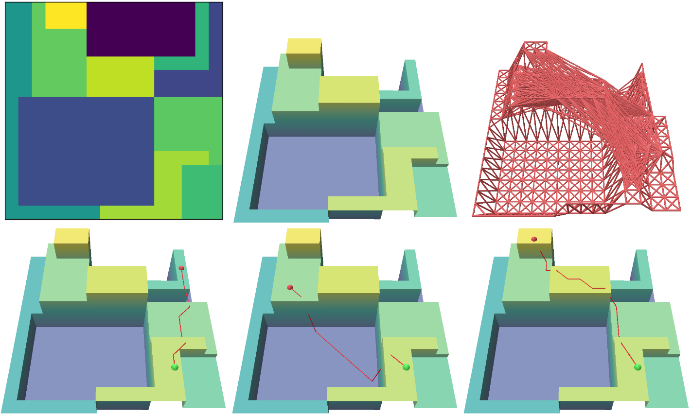

My first paper has been accepted to SIGGRAPH 2025.
It describes an AI autophagy method for automatically augmenting a dataset while continually training both a motion generation model and motion tracking controller.
Read more about PARC here!
In this blog post, I want to describe the details regarding motion and path planning.
Path Planner

Autoregressive Motion Generation
Conclusion